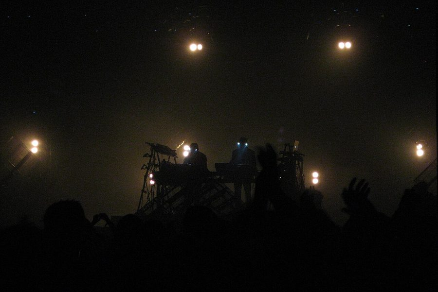

Orbital join lineup for Sydney's Playground Weekender


.jpg){kind=link}
In a ‘shock, horror, surprise and delight’ announcement that has roared out of the leftfield with brutal force, the organisers of Sydney’s annual four-day camping event the Playground Weekender Festival have announced that elite electronic live performers Orbital will be joining the fun in February. The band’s legacy is undeniable, but amazingly, it’s been nearly twenty years since the group last played live in Australia, so they’re ripe for a triumphant return.
Brothers Phil and Paul Hartnoll arguably help set the framework of modern dance music in the 90s with anthems like Halcyon, but it was just as much for their live show that allowed them to earn the status of legends. Witness their headline performance at Glastonbury Festival in 2004, which was voted by Q Magazine as one of the top 50 gigs of all time. Combining live electronics with a huge level of improvisation and visuals, they’re as comfortable today on stage as they were 15 years ago.
After taking a five-year break from band duties, Orbital rejoined the festival circuit in 2009 and have landed at some of the world’s biggest and most successful events – including The Big Chill, Get Loaded, London Freeze and Global Gathering, where they played to over 350,000 people. And the Playground Weekender will be their next point of call.
Reckon they’ll play any more shows around the country? ITM reckons it’s a fairly safe bet.
Orbital will play Playground Weekender when it takes over Del Rio Resort at Wisemans Ferry, NSW, from 18 to 21 February 2010.